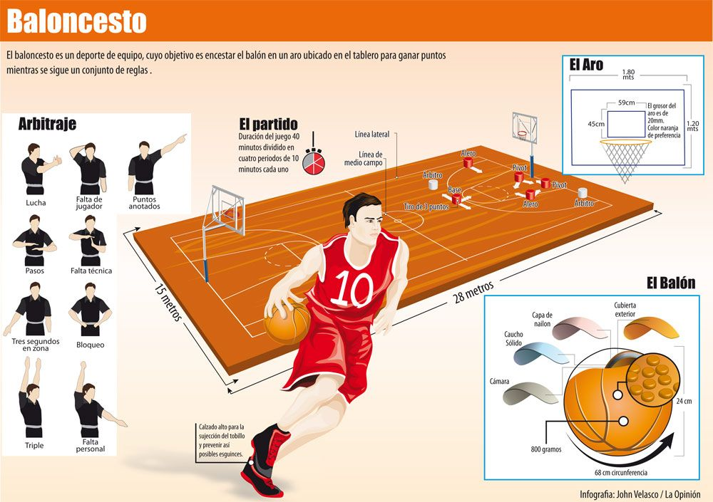

BALONCESTO
El baloncesto es un deporte de equipo. Juegan dos equipos cuyo objetivo es encestar el balón en la canasta del adversario e impedir que el equipo contrario enceste en la propia. Los partidos son dirigidos por dos árbitros y un oficial de mesa, y en el caso de que lo hubiera, un comisario. El ganador será el equipo que haya logrado más puntos de partido al final del partido. El terreno de juego tiene unas dimensiones de 28 metros de largo y 15 metros de ancho, medidas desde el borde interior de las líneas. Las líneas largas se llaman líneas de banda, y las líneas cortas se llaman líneas de fondo. Las líneas no forman parte del terreno de juego, de tal manera que si el balón bota en la línea, se considera que ha botado fuera del campo. Tiene dibujada una línea central en el medio de la pista paralela a las líneas de fondo, que llega de una línea de banda a la otra, y en el centro de la línea hay dibujad una circunferencia de 180 cm de radio.

POSICIONES
Las cinco posiciones del baloncesto representan una serie de cinco categorías-tipo de jugadores que integran un equipo genérico, relacionadas con sus funciones en la cancha y que sirven para clasificar de forma rápida, concisa y sencilla las principales características de cada jugador. Habitualmente, cuanto mayor es la estatura de un jugador, más cerca de la canasta desarrolla su juego. Sin embargo, existen muchísimos casos de jugadores que son capaces de desempeñar su posición con una altura muy superior al promedio para ese puesto Las posiciones son:.
ESCOLTA
- El escolta tiene que realizar múltiples tareas, tanto en ataque como en defensa
- El escolta siempre suele ser uno de los máximos anotadores del equipo
- El mejor jugador de todos los tiempos, Michael Jordan, también fue el mejor escolta
Algunos de los jugadores más importantes de la historia y de la actualidad son escoltas, algunos ejemplos son: Michael Jordan, Kobe Bryant, Stephen Curry, Lebron James...
ALERO
El alero tiene que ser capaz de tener visión de juego, buen movimiento de pies, que pueda salir en un contraataque finalizaciones tanto tiros a media como a larga distancia y que sea capaz de hacer una entrada. La importancia de la colocación del cuerpo y de los pies puede determinar un tiro bueno o excelente, en este punto también hay que mirar el tema del pase y la colocación para la recepción. Los jugadores más importantes en esta posicion en la actualidad y a lo largo de la historia son: Lebron James, Larry Bird, Kevin Durant, Scottie Pippen...
BASE
El base era un jugador bajito, quizás se le ponía a dirigir porque tenía el centro de gravedad más bajo y se le suponía cierta habilidad para el manejo del balón, rapidez y visión de juego. Durante décadas, la posición de base, "point guard" en inglés, estuvo manejada por ese perfil de jugadores, tanto en Estados Unidos como en Europa, pero la llegada de Jerry West (Los Angeles Lakers) y la abrupta irrupción de Magic Johnson y sus 2,05 de estatura empezaron a diluir los perfiles rígidos que habían manejado el balón en los primeros años.
Normalmente el base inicia el ataque o dirige el contraataque. En un ataque que podemos llamar 'posicional', el base ordena las figuras conforme al plan de juego y desarrolla el sistema de inicio. Sí es cierto que, debido a esto, su rol es de muy estrecha confianza con el entrenador.
PIVOT
Si hay una posición en el baloncesto en la que se debe trabajar específicamente para recibir es en la de pívot, ya que suele hacerlo de espaldas al aro y no puede ver a su defensor, teniendo a su vez una visión bastante reducida del resto de jugadores, además de un tiempo limitado para atacar. De ahí que sea básico hacer hincapié, cuando se enseña a jugar al poste, en que ganen la posición a la defensa y reciban el balón en óptimas condiciones.
Un ejemplo muy claro de pivot y sin duda uno de los mejores por no decir el mejor es: Shaquille O'Neal. Fue y será el mejor pivot de todos los tiempos ya que hacía a la perfección su trabajo y ni tiraba ni driblaba, solo machacaba el aro y ponia tapones a montones.
ALA-PIVOT
Ala-pívot (en inglés, power forward ), también denominado poste bajo, o 4 en la terminología empleada por entrenadores, es una de las 5 posiciones de un equipo en una pista de baloncesto. Son, por lo general, jugadores altos que juegan cerca del aro, hábiles en el rebote y con buen tiro en posiciones dentro de la zona.
REGLAMENTO
- El balón puede ser lanzado en cualquier dirección, con una o dos manos.
- El balón puede ser palmeado/golpeado en cualquier dirección, con una o las dos manos (nunca con el puño o mano cerrada).
- Los jugadores no podrán correr con el balón. Deberán pasarlo incluso desde otro lugar en el que lo cogieron, se concederá una relativa tolerancia al jugador que en plena carrera reciba el balón y deba pararse.
- El balón debe llevarse en las manos o entre ellas. Los brazos o el cuerpo no se deben usar para sostenerlo en ningún caso.
- Está prohibido cargar con el hombro contra un adversario, así como agarrar, empujar, poner la zancadilla o golpear de manera alguna al oponente. Toda infracción a esta regla por parte de cualquier jugador se considerará una falta y en caso de reincidencia, el infractor será eliminado hasta que se consiga un nuevo cesto. Si la intención al golpear es evidente, el jugador será eliminado por el resto del partido y no podrá ser reemplazado.
- Golpear con el puño el balón es falta, al ser violación de las reglas 2 y 4, sancionándose del mismo modo que la regla 5.
- Si cualquiera de los equipos hace tres faltas personales consecutivas, se contabilizará una canasta para el equipo contrario (consecutivas significa que durante ese tiempo el oponente no haya cometido ninguna falta).
- Se contará canasta cuando el balón sea lanzado, golpeado o palmado desde el suelo hasta la cesta y se quede en ella, los defensores nunca tienen que tocar el balón o dificulten la canasta. Si el balón se queda en el borde de la cesta sin llegar a entrar y el oponente mueve la canasta, se contabilizará como punto.
- Cuando el balón salga fuera del campo de juego, volverá al campo. La primera persona que lo toque lo lanzará al campo de juego. En caso de discusión el árbitro (auxiliar) realizará un salto entre dos. El que saca dispone de cinco segundos para hacerlo; si retiene el balón más tiempo, el balón pasará al equipo contrario. Si cualquiera de los equipos persiste en retrasar el juego, el árbitro auxiliar le señalará falta.El árbitro auxiliar será el juez que anote las faltas personales y avisará al árbitro principal cuando se cometan tres faltas consecutivas. Podrá descalificar a los jugadores según lo establecido en la regla número 5.
- El árbitro auxiliar será el juez que anote las faltas personales y avisará al árbitro principal cuando se cometan tres faltas consecutivas. Podrá descalificar a los jugadores según lo establecido en la regla número 5.
- El árbitro principal juzgará lo que se refiere al balón y determinará cuándo éste está en juego o ha salido fuera, a qué equipo pertenece, además de llevar el control del tiempo. Decidirá cuándo se ha marcado un tanto y contabilizará las canastas y asimismo realizará las obligaciones habituales de un árbitro.
- El partido constará de dos partes de 15 minutos, con 5 minutos de descanso entre las mismas.
- El equipo que obtenga el mayor número de cestos en ese espacio de tiempo será declarado ganador. En caso de empate, si los capitanes acuerdan hacerlo, el partido se podrá continuar hasta que se marque una canasta.
